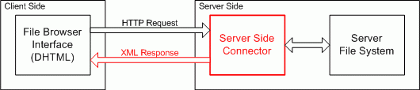

This documet offers some guidelines that must be considered when developing server side integration for FCKeditor (alias Server Side Integration Pack).
There a few points of integration that every server side technology should have to be completely ready for FCKeditor. These are the main features:
This document will present the basic (minimum) features the integration must accomplish to. Any other feature is a welcome surplus. The scope of this document is to provide a generic pattern in the way the editor can have a homogeneous programming style even throw different languages.
This is the main integration feature needed. It makes it possible to create an instance of FCKeditor in a page using the desired server side language. Object oriented programming (OOP) should be used wherever is possible. These are the tasks the Integration Pack should propose to the end user programmer:
Suppose the editor instance is called "MyEditor". For compatible browser the Integration Pack should output HTML like this:
<div>
<input type="hidden" id="MyEditor" name="MyEditor" value="initial
value (HTML encoded) ">
<input type="hidden" id="MyEditor___Config" value="Key1=Value1&Key2=Value2&...
(Key/Value:HTML encoded)">
<iframe id="MyEditor___Frame" src="/FCKeditor/editor/fckeditor.html?InstanceName=MyEditor&Toolbar=Default"
width="100%" height="200" frameborder="no"
scrolling="no"></iframe>
</div>
While non compatible browsers should get:
<div>
<textarea name="MyEditor" rows="4" cols="40" style="WIDTH:
100%; HEIGHT: 200px" wrap="virtual">initial
value (HTML encoded)</textarea>
</div>
The Integration pack should usually offer a main class, called "FCKeditor", in a file called "fckeditor.ext" placed in the root of the editor's distribution package. To be able to use the class the end user should just include a "link" to that file and then easily create an instance of it. Obviously this is the common scenario for scripting languages. Other languages should just reflect this situation in the better way it's possible.
This is the basic structure of the FCKeditor Class:
Constructor
FCKeditor( instanceName )
Properties
InstanceName
Width
Height
ToolbarSet
Value
BasePathCollections
Config (Only if possible to use collections)
Methods
Create()
SetConfig( key, value ) (Only if not possible to use collections)
The implementation should be based on the Javascript implementation (see fckeditor.js file). See /_documentation/Developers/Using FCKeditor/Javascript.html for a complete explanation of the class elements.
[ Documentation not yet available ]
The editor gives the end user the flexibility to create a custom file browser that can be integrated on it. This is a powerful feature, because every case is a different case and so different and specific problems must be solved. In any case, the editor package offers a default implementation of the File Browser so the user has a ready to use software without having to develop anything.
On prior versions, a sample File Browser was available for each server side technology the editor was integrated. The problem with that approach is that each sample had a different implementation and worked completed different from each other. And worst, on some of then it was really poor.
To solve that problems the actual version offers a unique interface that can be used by all server side languages. The interface was developed completely on Javascript DHTML and the integration is available by XML. In this way the developer that wants to integrate with it doesn't have be worried about the presentation layer of it.
The following graphic shows how the File Browser Integration works:

The "Connector" is the main file to be developed in this case regarding the server side integration with the File Browser. The following tasks must be done by the Connector:
All requests are simply made by the File Browser using the normal HTTP channel. The request info is always passed by QueryString in the URL that reflects the following format:
connector.ext?Command=CommandName&Type=ResourceType&CurrentFolder=FolderPath&ServerPath=ServerPath
CommandName
Is the command the Connector must execute. For now there are three commands
that must be handled: "GetFolders", "GetFoldersAndFiles" and "CreateFolder".
ResourceType
The File Browser is used on many parts of the editor, like the Link and Image
dialog boxes and in the future Flash and Multimedia dialogs. So to
separate each "Resource Type" the following type names are
used: "File", "Image", "Flash" and "Media".
FolderPath
Represents the path of the actual folder visible in the File Browser. This path
is not the final URL path for that folder, but it is relative to the Resource
Type folder. The final folder is composed by: "Configured User Files Path" +
"Resource Type" + "Folder Path". For example, the Folder Path "/Docs/Test/"
of resources type "Image" could correspond to the following URL path:
"/UserFiles/Image/Docs/Test/".
The Folder Path must always begin and finish with a slash ("/").
ServerPath
Is the path to the root directory for the files handled by the connector. This
is not the best approach to set the server directory to use but its a option
the end user can have.
The developer is encouraged to make available an easy and secure way to configure the "Server Path" folder by the end user. For example, for the ASP.NET Connector the user can use the global Web.config file to set witch folder to use the file. In case of absent configuration the Connector must use the "/UserFiles/" folder. The Connector should also automatically create the folder in the case it not exists.
Please try to let any configuration setting to be done outside the editor package directory. In this way it is easy to the end user to handle future editor updates (just replacing the entire directory with the new version).
All Connector responses have the same base XML structure, like this:
<?xml version="1.0" encoding="utf-8" ?>
<Connector command="RequestedCommandName"
resourceType=" RequestedResourceType">
<CurrentFolder path="CurrentFolderPath"
url="CurrentFolderUrl" />
<!-- Here goes all specific command data -->
</Connector>
Some important things must be considered when building the response:
The actual File Browser version has 3 commands that wait for XML responses and 1 command that wait for HTML:
Sample responses can be found in the "[Docs Path]/contents/002/FileBrowserConnectors/SampleResponses" folder.
GetFolders
Gets the list of the children folders of a folder.
Sample Request:
connector.ext?Command=GetFolders&Type=File&CurrentFolder=/Samples/Docs/
Sample Response:
<?xml version="1.0" encoding="utf-8" ?>
<Connector command="GetFolders" resourceType="File">
<CurrentFolder path="/Samples/Docs/"
url="/UserFiles/File/Samples/Docs/" />
<Folders>
<Folder name="Documents" />
<Folder name="Files" />
<Folder name="Other Files" />
<Folder name="Related" />
</Folders>
</Connector>
GetFoldersAndFiles
Gets the list of the children folders and files of a folder.
Sample Request:
connector.ext?Command=GetFoldersAndFiles&Type=File&CurrentFolder=/Samples/Docs/
Sample Response:
<?xml version="1.0" encoding="utf-8" ?>
<Connector command="GetFoldersAndFiles"
resourceType="File">
<CurrentFolder path="/Samples/Docs/"
url="/UserFiles/File/Samples/Docs/" />
<Folders>
<Folder name="Documents" />
<Folder name="Files" />
<Folder name="Other Files" />
<Folder name="Related" />
</Folders>
<Files>
<File name="XML Definition.doc" size="14" />
<File name="Samples.txt" size="5" />
<File name="Definition.txt" size="125" />
<File name="External Resources.drw"
size="840" />
<File name="Todo.txt" size="2" />
</Files>
</Connector>
The file size must be expressed as KBytes (KB).
CreateFolder
Creates a child folder.
Sample Request:
connector.ext?Command=CreateFolder&Type=File&CurrentFolder=/Samples/Docs/&NewFolderName=FolderName
Sample Response:
<?xml version="1.0" encoding="utf-8" ?>
<Connector command="CreateFolder" resourceType="File">
<CurrentFolder path="/Samples/Docs/"
url="/UserFiles/File/Samples/Docs/" />
<Error number="0" />
</Connector>
Possible Error Numbers are:
FileUpload
Adds a file in a folder.
This is a special command that doesn't require a XML response. A common "multipart/form-data" post goes with the request. The posted file is named "NewFile".
In the case a file with the same name already exists, the Connector must automatically rename it adding a progressive number suffix. For example, if the posted file is named "Test.doc", the names to be used, in order, are: "Test(1).doc", "Test(2).doc", Test(3).doc"... and so on.
Sample Request:
connector.ext?Command=FileUpload&Type=File&CurrentFolder=/Samples/Docs/
Sample Response (Simple HTML):
<script type="text/javascript">
window.parent.frames['frmUpload'].OnUploadCompleted(0) ;
</script>
The "OnUploadCompleted" is a JavaScript function that is called to expose the upload result. The possible values are:
All connectors available in the editor package can be found at the following folder: "editor/filemanager/browser/default/connectors". Each server side language has its own folder there, with the Connector file inside it. To choose witch connector to use, the end-user just go to the configuration file and modify the following key (in this case for the Link Dialog box):
FCKConfig.LinkBrowserURL = FCKConfig.BasePath + "filemanager/browser/default/browser.html?Connector=connectors/aspx/connector.aspx" ;
The Connector path is relative to the "editor/filemanager/browser/default" folder. The user could even written his custom Connector and point the LinkBrowserURL to it, like "?Connector=/MyFolder/MyConnector.php" for example.
The easiest way to the end user to understand how to use the editor is to see it in action. So it's important to make available samples that clearly show how to use it.
The developers are invited to create samples similar to that available for the Javascript Integration Pack. Please take a look at the _samples/html folder. All files must be put together in a folder under the _samples folder.
All samples should post the posted data to a single page that shows that data. The Javascript integration module use an ASP file, called sampleposteddata.asp, that does that (just because it doesn't go on server side). That file can be used as a reference for a custom implementation. Please use the same file name, like sampleposteddata.ext.
[ Documentation not yet available ]